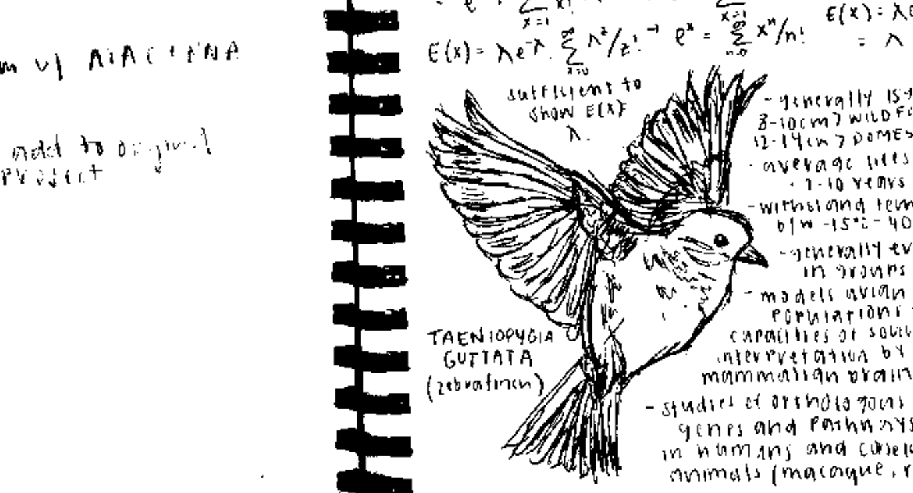
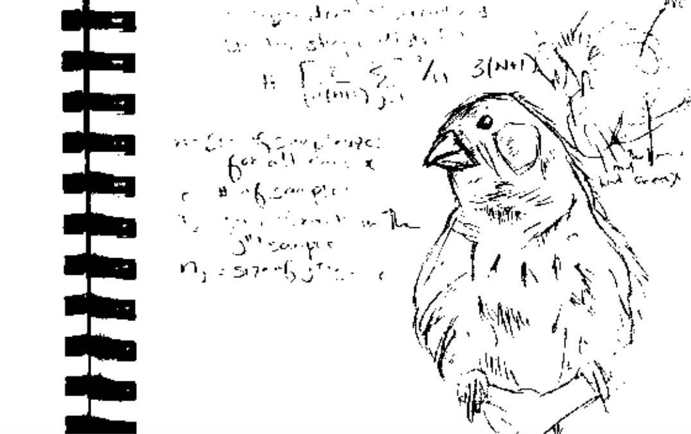

selected projects
Pfenning Lab, CMU Department of Biological Sciences (February 2023 - Present)
Project Title: Characterizing specialized enhancer activity and convergent evolution of vocal learning across mammalian and avian clades
Vocal production learning, or vocal learning, is the ability to imitate sounds through social exposure. Interestingly, all studied vocal learning species have evolved a specialized forebrain sensorimotor learning circuit that is either absent or rudimentary in their closer, vocal non-learning relatives. The patterns of convergent evolution in gene expression of vocal learning and non-learning species and the lack of a strong protein-coding signal implies that much of the evolution of the trait is likely due to enhancers — cis-acting DNA sequences thought to increase transcription. My project builds on the principle that vocal learning associated mutations likely impact enhancers, thus creating genetic differences that can influence gene expression within specific cell types that make up the vocal motor system. These gene expression differences are then hypothesized to influence the development and function of neural circuits underlying vocal behavior. We use recent advances in computational and experimental methodologies to understand how neural circuits have evolved to affect the complexity of vocal learning, and how associated genetic changes affect trait expression. By characterizing and developing profiles for various cell types in the songbird brain and vocal learning pathways, we are able to measure the impact of associated genetic enhancers in cells across a variety of species using a high throughput reporter assay. Concurrently, we are able to predict enhancer activity conservation, connecting genetic sequence differences between species to the vocal learning phenotype across large numbers of mammals. This could strengthen our knowledge of core brain mechanisms of vocal learning, as well as help us understand the convergent evolution of similar skilled motor behaviors.

Watts Lab, National Institute of Environmental Health Sciences (June 2021 - May 2022)
Project Title: Guanine-Quadruplex Formation Regulates RNA Polymerase II Pausing and Gene Expression
Transcription is the process of copying a segment of DNA into RNA, carrying the gene’s protein information coded into DNA to be expressed in various phenotypes. A phenomenon that can occur in nucleotides that have an abundance of guanine bases is the formation of a helical, secondary structure known as guanine quadruplexes. While their exact function is still being established, it’s commonly known that these structures can drive genome instability by creating mutations, deletions, and causing recombination events. In this project, we aimed to understand how the formation of quadruplexes regulates RNA polymerase pausing during the transcription. We used computational tools to identify that quadruplexes are enriched in environmentally responsive genes, suggesting that their formation may not be a simple genetic response. This could be used in experimental medicine, as targeting these structures with small molecules could be an innovative strategy to control the expression of proteins that can’t be targeted with current drugs or therapies.

Furey Lab, UNC Department of Genetics (August 2019 - May 2022)
Project Title: Allelic Imbalance Analyses in Crohn’s Disease
Crohn’s disease (CD) is a chronic condition of the gastrointestinal tract due to an irregular immune response to enteric microbiota. Allele-specific approaches utilize within sample DNA sequence heterogeneity in order to identify genetic differences on cis-regulatory control in diploid genomes. Allelic imbalance is when different alleles at a specific locus are associated with altered levels of functional activity, such as with respect to gene expression or regulation. This difference in signal can be calculated based on a sequencing readout from a quantitative functional genomics assay. In this project, we specifically considered chromatin accessibility, where we believe that the number of reads at a locus reflects the level of accessibility, and in turn, the regulatory activity at that locus. At heterozygous single nucleotide polymorphisms (SNPs), it is possible to analyze how much signal comes from one allele, and if there is significant discrepancy in signal between the two alleles, it can provide evidence for some form of allelic imbalance at the site. ATAC-seq was performed on patient samples to generate paired-ends reads and identify locations of gene regulatory regions, and we used allelic imbalance software (WASP) to perform unbiased allele-specific read mapping and discovery of sites of significant allelic imbalance. The combined haplotype test in WASP was used to determine significance based on genotype probabilities at known heterozygous sites and overlapping mapped ATAC-seq reads. We identified over 2000 sites of allelic imbalance in CD patients and 1300 sites in non-CD patients. 8 sites were found to overlap loci identified as associated with CD in Genome-Wide Association Studies (GWAS). These loci included well-known CD-associated genes of interest, such as NOD2 and DNMT3A. These studies provide potential non-coding mechanisms at GWAS and other loci. .
resume + cv (last updated summer 2024)
curriculum vitae, pdf
resume, pdf